约 1614 个字 17 行代码 预计阅读时间 8 分钟
Chap 5 | “Binomial Queue”
章节启示录
本章介绍了二项树和二项队列，或许还要自学一下斐波那契堆。对于二项队列而言，它可以弥补二叉堆的不足: \(merge\) 操作的时间复杂度为 \(O(N)\) 。二项队列的 \(merge\) 操作的最坏时间复杂度为 \(O(logN)\) 。
1.定义¶
同样地，在这里我们也想先了解二项队列的作用和意义。
我们知道，二叉堆的 \(merge\) 时间复杂度为 \(O(N)\) ,但我们想把这个复杂度降下来，降到 \(O(logN)\) ，于是有了二项队列。
思考
二项队列的名字由来是什么呢？二项？什么地方会出现二项？二项式定理、二进制！不妨思考一下二项队列与二进制的联系，非常的巧妙与神奇。
- 二项树：高度为 0 的二项式树是单节点树。高度为 \(k\) 的二项式树 \(B_k\) 是通过将二项式树 \(B_{k-1}\) 附加到另一个二项式树 \(B_{k-1}\) 的根而形成的。要注意的是：二项树同时是一个堆，它应该具备小根堆（大根堆）的性质。
- 性质：二项树的节点个数等于它的名称下标（如 \(B_3\) 的子节点个数为 \(3\) ）,且它的子树一定是一系列二项树（如 \(B_3\) 的子树为 \(B_0,B_1,B_2\) ）。
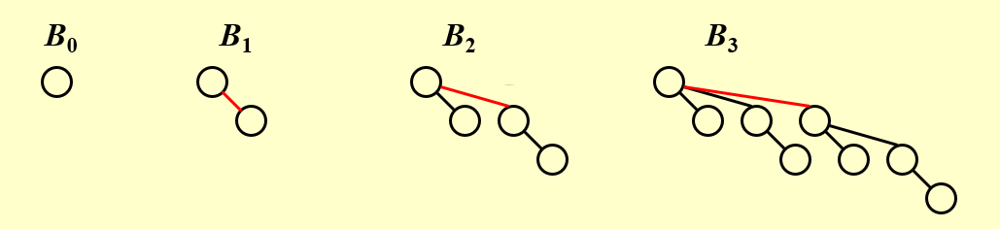
- 二项队列：二项队列是二项树的集合。
- 性质：一个二项队列中，不会存在两个形式上一样的二项树（即不会出现两个形如 \(B_0\) 这样的二项树），它们将会被合并成新的二项树，类似于二进制中的进位！
还记得我们说的二项队列与二进制之间的联系吗？其实每一个二项队列都可以被特定地表示成一个二进制数，我们来看下面的例子。
例子🌰
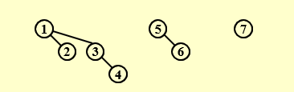
可以看到图中从左自右依次是：\(B_2,B_1,B_0\)
那么这个二项队列表示的数字就是：\(\large(111)_{2}=2^2+2^1+2^0=(7)_{10}\)
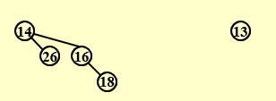
可以看到图中从左自右依次是：\(B_2,B_0\) 那么这个二项队列表示的数字就是：\(\large(101)_{2}=2^2+2^0=(5)_{10}\)
- 我们可以发现，这个数字恰好是节点的个数。
2.操作¶
2.1 FindMin¶
因为二项队列实际上是堆的集合，所以根据堆的性质，最小值位于其中一个根中。对于任意 \(n\) 个节点，它们最多可以划分成 \(\lceil logN \rceil\) 个二项树，因此FindMin的时间复杂度为 \(T_p=O(logN)\)
Note:
我们可以记住最小值，并在更改时进行更新。 然后这个操作将只需要 \(O(1)\)。
2.2 Merge¶
对于Merge操作我想直接借助一个例子来展示，请尤其注意Merge的操作其实和二进制的加法有异曲同工之妙。
例子🌰
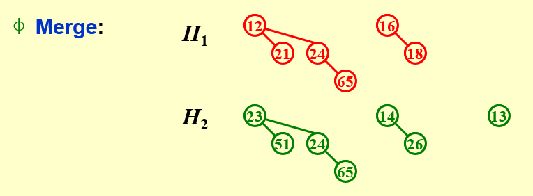 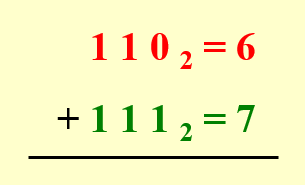
- 注意到 \(H_1\) 代表的是 \((110)_2=(6)_{10}\),\(H_2\) 代表的是 \((111)_2=(7)_{10}\)。
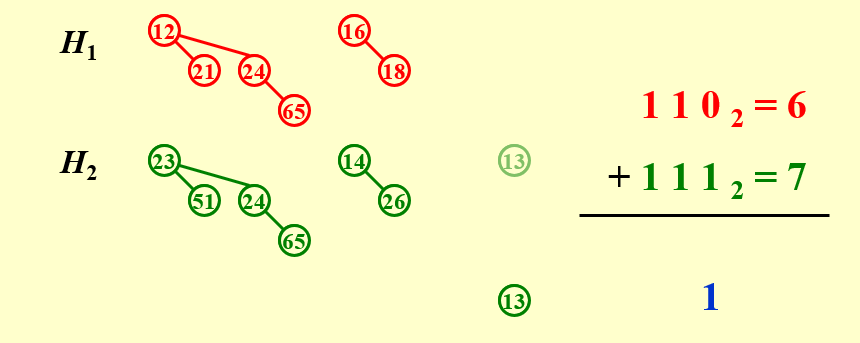
先从 \(B_0\) 开始，只有 \(H_2\) 有 \(B_0\) ，直接拿下来，相当于加法中最末位的 \(0+1=1\)。
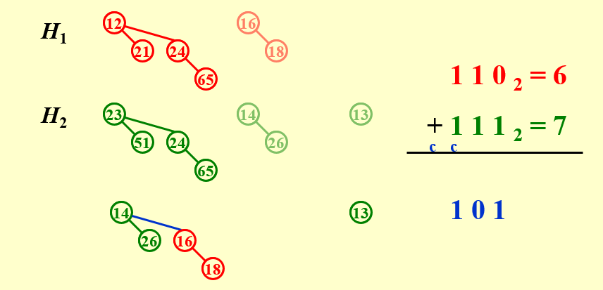
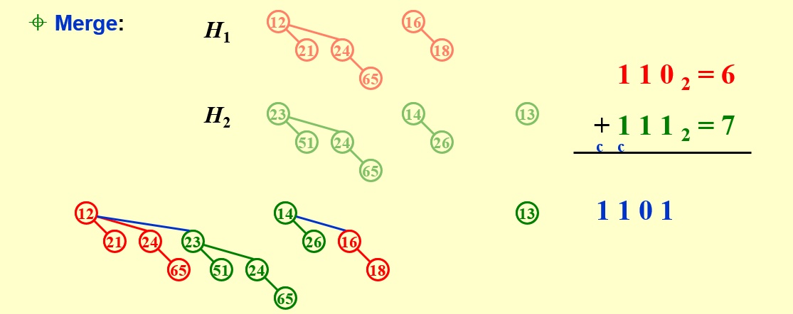
2.3 Insert¶
和左堆的插入一样，这里的插入也是Merge的一种特殊形式。
如果最小的不存在的二项式树是 \(B_i\) ,那么 \(T_p=Const*(i+1)\)。
在初始空的二项式队列上执行 N 个插入将花费 O（N） 个最坏情况的时间。 因此，平均时间是恒定的。
2.4 DeleteMin¶
- Step1:FindMin in \(B_k\) 。
- Step2:Remove \(B_k\) from \(H\) ,形成 \(H^{\prime}\) 。
- Step3:Remove root from \(B_k\) ,形成 \(H^{\prime\prime}\) 。
- Step4:Merge \((H^{\prime},H^{\prime\prime})\)
一个例子🌰
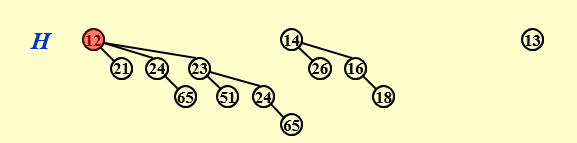
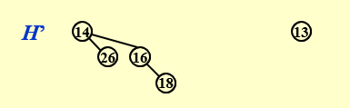
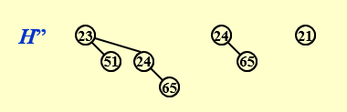
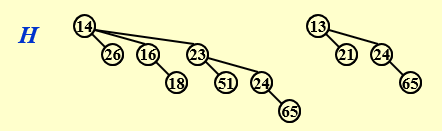
3.实现¶
二项队列的实现我们可以参考将任意树转化为二叉树的步骤。
即：将每个节点的左孩子指向他的兄弟节点形成链表。
-
我们对子树的排序有两种选择：
1.升序排列子树（按子树节点的数量，即它对应的二进制数或者说它的下标）
2.降序排列子树（按子树节点的数量，即它对应的二进制数或者说它的下标） -
先给出结论：我们按照降序排列。
接下来我们来分析一下为什么。其实主要考虑的因素就是升序/降序对操作的时间复杂度的影响。我们可以用Insert操作为例进行分析。
-
如果我们按升序排列，那么当二项队列中出现两个同种二项树时，我们需要进行合并，合并时需要将其中一个二项树连接到另一个二项树上。因为我们选择使用NextSibling的方式，所以我们需要遍历到最后一个Sibling然后插入，这样的时间复杂度是 \(O(logN)\) 。
-
如果我们按降序排列，我们选择Root较小的二项树作为被连接对象，那么只需要先将另一个二项树的根节点指向LeftChild,然后将被连接二叉树的根节点指向连接二叉树的根节点即可，这样的时间复杂度是 \(O(1)\) 。
下面是简单的代码实现，可以明显看出这样的时间复杂度是 \(O(1)\)
BinTree
CombineTrees( BinTree T1, BinTree T2 )
{ /* merge equal-sized T1 and T2 */
if ( T1->Element > T2->Element )
/* attach the larger one to the smaller one */
return CombineTrees( T2, T1 );
/* insert T2 to the front of the children list of T1 */
T2->NextSibling = T1->LeftChild;
T1->LeftChild = T2;
return T1;
}
4.摊还分析¶
- 聚合分析：
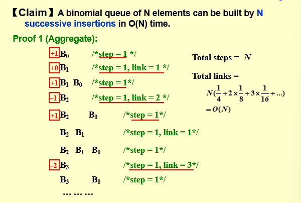
我们观察到每过 \(4\) 个节点，会出现一次 \(link=1\);每过 \(8\) 个节点，会出现一次 \(link=2\) ……
因此不难得出总的 \(\large link\) 数为 \(Total \;\; links=N(\frac{1}{4}+2×\frac{1}{8}+3×\frac{1}{16})=O(N)\)
- 摊还分析：
势能函数
\(\large C_i+(\Phi_i-\Phi_{i-1})=2\)
\(C_i\) 是第 \(i\) 次插入的cost。
\(\Phi_i\) 第 \(i\) 次插入后的树的个数。（\(\Phi_0=0\)）
将势能函数累加得：
所以我们可以发现：
复习时的一些补充
- Inserting a number into a binomial heap with 15 nodes costs less time than inserting a number into a binomial heap with 19 nodes.
插入看节点总数的最低位开始出现0的位置，出现越早时间越短。
15：1111，19：10011，19更早出现0，因此是19更快。 - 插入的最坏情况是 \(O(logN)\) ，但这只存在于需要一直进位的时候。而连续插入 \(N\) 个数据时，不可能每插入一个就进位，因此连续插入 \(N\) 个数是 \(O(N)\) 。